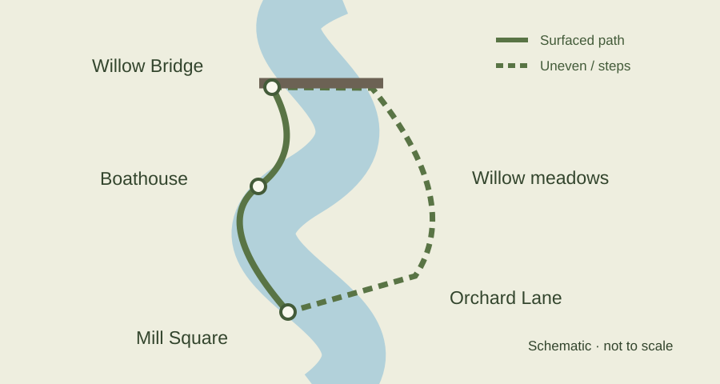

A gentle walk from the old mill to the willow meadows, with places to pause and a shorter step-free option.
By Alderwick Walking Group · Published September 1, 2026
Full loop: 5.2 km
Allow 1 hour 45 minutes
Climb: 35 m
Start: Mill Square
The river loop links Alderwick's working past with a quieter edge of town. Begin beside the brick clock tower in Mill Square, follow the east bank upstream, cross at Willow Bridge, and return through the meadows. Most of the walk follows the water, but the final section turns inland along Orchard Lane.
You do not need to complete the loop to enjoy the river. The surfaced east-bank path between Mill Square and the boathouse is 1.2 km each way. It is the most suitable option for wheels and for anyone wanting a shorter outing.

Map is schematic. Distances in the section table are more useful than the drawing's scale.
| Section | Distance | Surface | What to expect |
| Mill Square to the boathouse | 1.2 km | Smooth compacted gravel | Level riverside path, benches every 300–400 m |
| Boathouse to Willow Bridge | 1.6 km | Earth and loose gravel | Two narrow gates, short uneven climb near bridge |
| Willow meadows to Mill Square | 2.4 km | Grass, earth, then pavement | Open views; muddy after rain; 12 steps at Orchard Lane |
From the clock tower, take the signed ramp toward the river. The mill buildings are now small workshops; please keep their doorways clear. The path is broadest here, and the low wall offers a view of the weir. Stay behind the railings: the water below the weir can be fast even when the surface looks calm.
After the second bench, look for a row of pollarded willows. Their new growth is cut on a rotating schedule to keep the riverside path open. The boathouse comes into view just beyond them. A drinking-water tap is available outside from April through October.
The path narrows beyond the boathouse. Roots and loose stones make this section less predictable underfoot. At the fork, stay beside the river; the uphill branch leads to private farmland. There are no public facilities between the boathouse and the town centre.
Willow Bridge is a pedestrian bridge with a shallow approach on the east bank and a short uneven descent on the west. Cyclists should dismount. Stop on the bank rather than on the bridge if you want to watch the water.
Follow the mown path across the meadow, keeping the river on your left. In spring and early summer, stay on the marked route to avoid nesting areas. Dogs are welcome on a short lead. There are no bins in the meadow; take litter back to the bins at Mill Square.
The path meets Orchard Lane at a flight of 12 steps. Turn left along the pavement and follow the mill chimney back toward the square. The last crossing has a dropped kerb but no traffic signal, so allow extra time at busy periods.
The full loop is not step-free. Two narrow gates, uneven ground, and the Orchard Lane steps can be barriers. The recommended step-free outing is the 2.4 km return journey from Mill Square to the boathouse on the east bank.
The accessible toilet at Mill Square is open 9 a.m.–5 p.m. daily. The east-bank path is approximately 1.8 m wide, but maintenance can temporarily reduce that width. Benches have backs; only the benches nearest Mill Square have armrests.
Mobile reception is patchy near Willow Bridge. Save the route before setting out and tell someone where you are going if walking alone.
Bus 14 stops at Mill Square. Services run hourly Monday to Saturday and every two hours on Sundays. Check the operator's timetable before travelling; this guide is not a live service update.
Cycle stands are beside the clock tower. The small Mill Square car park has two accessible bays and a maximum stay of four hours. There is no parking at the boathouse or Willow Bridge.
The meadow can flood after sustained rain and may remain muddy after water levels fall. Do not enter floodwater or pass closure signs. If the west bank is wet, use the surfaced east-bank path and return the same way.
In hot weather, carry water; much of the meadow has no shade. In winter, start early enough to return before dark. There is no lighting beyond the first 400 m from Mill Square.